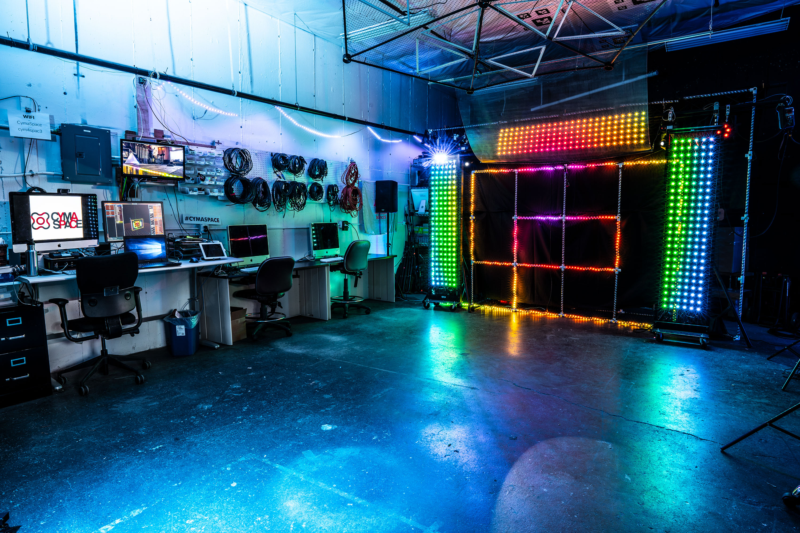

PRESS RELEASE
PORTLAND, Ore. (January 24th, 2019) – At CymaSpace we believe access to the world is a fundamental human right. For over 5 years we have committed our resources to affecting positive change by encouraging inclusion and equal access for the Deaf and Hard of Hearing community. In support of this vision, CymaSpace is thrilled to announce it’s newest initiative; Access Lab – A Space for All. Assess Lab is the next step to facilitating accessibility at the intersection of technology, art and social movements.
Access Lab integrates a Workshop, Education Program and Support Services within our new 800 sq. ft studio. Access Lab provides multimedia workstations, community meeting areas, event production & rehearsal facilities, audio-visual tools, live captioning technology and a pilot micro-grant program to provide disability accommodation resources to individual members and partnering organizations. Access Lab members have access to these resources year-round in tandem with support and mentorship from CymaSpace volunteer staff.
For more information about how to become a member, see our Patreon page:
https://www.patreon.com/cymaspace
Year One Goals:
- Increase the frequency and impact of arts and cultural events that are accessible to Deaf & Hard-of-Hearing (DHH) Oregonians and document the impact of the programs.
- Spread awareness of accessibility needs of DHH and access requirements of the Americans with Disabilities Act.
- Partner with Access Providers: Stellar Communications is a Service Provider agency that refers Sign Language Interpreters and translators. Qualified BIPOC and Certified Deaf Interpreters (CDI’s) are given priority for freelance opportunities in CymaSpace projects.
- Create specific work opportunities for Certified Deaf Interpreters (CDI’s). A CDI with native ASL skills complements a non-native interpreter. CymaSpace makes every effort to include CDI’s in all our projects.
- Award small grants to qualifying nonprofit and for-profit organizations that want to provide DHH access services and technology, but need performing arts interpretation or live captioning services.
Access Lab – A Space For All is facilitated by CymaSpace, a Portland non-profit arts and technology incubator. CymaSpace is dedicated to making art and cultural events accessible and inclusive to the Deaf and Hard of Hearing through technology, education and outreach. Committed Deaf and hearing volunteers lend their skills to develop a variety of art installations and stage sets that synergize sound, light, and vibration. The work of CymaSpace has been featured nationally on Jimmy Kimmel Live, as well as at festivals like What The Fest?, Portland Winter Light Festival, Kentucky DeaFestival, and prominent local institutions such as Portland Art Museum, Clark County Historical Museum, Portland Institute of Contemporary Art, Oregon Contemporary, and Oregon Museum of Science & Industry (OMSI).
For PR/Media Inquiries contact Myles de Bastion: